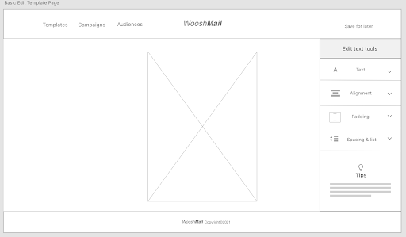
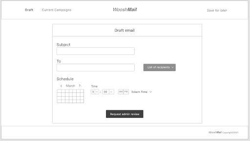
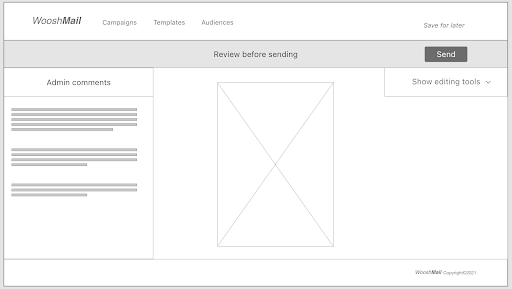
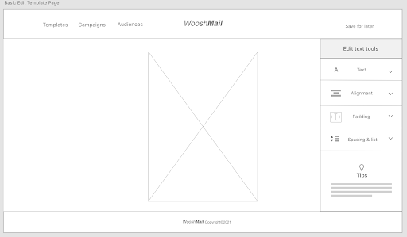
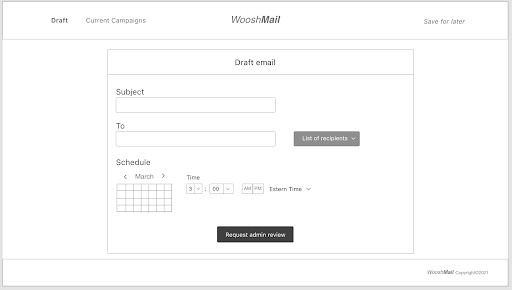
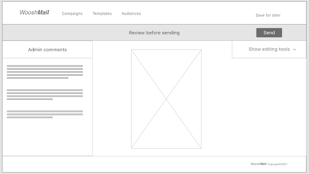

Planning
Personas


Storyboard
Admin

Basic

Competitor Analysis
Features:
a. Has contact number listed in the nav menu.
b. Primary website colors include white, blue, and orange.
c. A.I technology to help design websites and emails.
Notes:
The navigation looks overly designed. It doesn’t make sense why the navigation is hamburger style on a desktop site. This makes more sense for a mobile device. I believe the email entry form and the “sign up free” button could be simplified with one single call to action button. The headers and copy are appropriately sized, which helps readability. Another positive for the site is that it looks clean and simple, That is, the layout of images and copy are clear and well presented. Images are large for viewing. Finally, I like the typeface because it reinforces the overall readability of the site.
Features:
a. In its navigation, it has a list of several products which is further well organized.
b. The resources section has guides and tutorials, marketing tips, and helpful case studies.
c. It has a unique section called inspiration which provides media resources about real businesses.
Notes:
The site uses at least two typefaces, one for the headers and the other for the body. It appears the site uses three primary colors, yellow, black, and white. The site is clear and readable. Although there is a lot of information on the main page the layout of text and images is properly labeled. The theme is friendly and inspires creativity - this is consistent in many of the site’s pages.
Features:
a. In its “features” section the content is well presented and explained.
b. The “Pricing” section is interestingly presented as it is based on the number of subscribers and it is highly detailed under “Compare plans.”
c. The “Blog” section is unique that offers short-read articles to users of Mailer Lite to help improve their communication with their customers.
Notes:
The website looks clean and readable. It uses a lot of white space and the contrast with the text is clear. I like that the site looks simple and it feels like I can easily get started. I think I might use a similar typeface for my design because it is simple and readable. The main page looks a little less coherent than the site’s other pages which appear more cohesive and contained. Maybe this is due to the all white background. One thing that I really don’t like is the green overlay when hovering over the images of templates. It just doesn’t make any sense. I want to view the template, not make it disappear. Overall I think Mailer Lite has the simplest user experience design than the other two sites.
Sketches & Wireframes
Sketches: Admin User
Email Template Gallery Page
Edit Email Template Page

Add Recipients Page
Send Email Page
Sketches: Basic User
Email Template Gallery Page

Edit Email Template Page
Add Recipients Page
Send Email Page
Wireframes: Admin User
Wireframes: Basic User
 





Iteration Explanation
These sketches were a little difficult to produce because I was unfamiliar with email marketing websites so I was unfamiliar with how the site would appear. For example, I was unsure how to label the navigation section because I did not know what users would exactly be looking for. However, after checking several sites from the competitor’s list, I designed the sketches to have similar features but have a clean and streamlined look. My overall intention was to design with simplicity for a person new to email marketing companies.
User Flow Testing
Task
Researcher: "In this research study, you will be asked to use a prototype of an email marketing website using this laptop. Can you navigate through the website to send an email? I will briefly explain how to use the prototype. It is simple. You can click anywhere you want on the app. However, the prototype will guide you where to click by highlighting the element you are supposed to click in blue color. This will help you proceed to the next page. Finally, you will complete this task twice, one as an administrator user and the other as a basic user."
Sample of Participant Notes
Middle age hispanic male - Looks carefully at the second screen (Admin edit page) - Participant looks around the edit page carefully and appears a little confused. Participant looks unsure if he completed the first task.
Filipino woman in her mid thirties - Before the study began, participant reported she did not know anything about email marketing but did note she writes emails everyday for work.
Admin prototype -
“What are the top ones for?” (Admin Template Page).
“Where do I click?”
Native American woman in her mid thirties -
Participant is smiling and appears to be in an eager mood. Participant did report before the study commenced that she had heard of email marketing but never used it herself.
Basic prototype -
“What if I need to make some changes?”
Participant reads the admin comments and asks if she can directly ask the admin questions or where on this screen can she go to ask questions.
Female Hispanic woman in her early twenties -
Basic Prototype -
Participant spend some time reading the admin comments and asked if this is where she sends an email to the admin.
User Flow Analysis
About half of the participants were unfamiliar with email marketing campaigns before they started the research study, and the other half knew about it but never used them in the real world. I believe adding a short description of what email marketing campaigns are is warranted. This could be added somewhere in the template/gallery page. In the basic prototype, my directions could have been explained a little more. I was pursuing a streamlined approach for users who are new to email marketing, but sometimes less is not always ideal. Thus, I could fix this in the future prototypes. Other changes to the prototypes would follow from participants’ frustrations. That is, the prototypes will need to be more clear with allowing users to revisit the editing page from the add recipient page and to properly label the “send page” so there is no confusion who the user is sending the email to.